Start here
Scientific question
How do a surface, mesh and contour view describe the same sampled temperature field, and which changes affect presentation rather than the underlying data? Generate a new Session through GX-TXT's registered 3D Thermal Surface generator, inspect its canonical table and provenance, run the visualization module, compare its real outputs and explore the same source in Preview and Plots. Save and reopen the Session to check identity and retained presentation.
The field is deliberately synthetic. It combines two prescribed Gaussian hotspots and a linear background. It is not measured thermography, a heat-transfer simulation or evidence of a steady-state heat-equation solution. No time series, conductivity, heat flux, boundary conditions or uncertainty model is established.
Optional local interactions have not initialized. The full text, native disclosures and reading checkboxes remain available.
Source baseline and prerequisites
The official deposited baseline is GX-TXT 0.9.8.10-dev-110, source commit e2f19dcc4c32bbc8aa7410683ecb87febe9c2e68. The recorded workflow used a private staged dev110 installation. It does not certify every foundation feature or a final dev111 release. Check your displayed application and module versions before following the lesson; later versions require reconciliation of changed controls.
Component identities — library version remains a source declaration
| Component | Declared identity |
|---|---|
| Library | org.giuxlab.gxtxt.accepted_generators, version 1.0.0 |
| Generator | surface3d_thermal_field, version 1.0.1, 3D Thermal Surface |
| Analysis module | demo.visualization.surface3d, version 1.0.3, 3D Surface Visualization Demo |
| Plot module | plot.dataset, version 4.2.4, Scientific Dataset Plot |
Resolve the actual registered generator in the normal catalog. Do not import a second copy merely because an older README/manual describes a Numerical Examples library or bundled version 1.0.0. The current recipe already creates a canonical Dataset and bindings; importing its raw CSV again is not the starting workflow. Do not edit the generator, Analysis module or vendor payload for this tutorial.
Step 1
Generate through the normal interface
When the independently packaged lesson is admitted in the common Guides Interactive Tutorial tab, its native Open Generate Session… action is the source-supported route to the paired catalog selection. It does not generate a Session or grant a page-script callback. Actual host discovery/action behavior still needs its own GUI evidence; the first intake may use the ordinary menu directly before that package is staged.
Open Generate Session… through the actual normal GX-TXT menu. Before resizing anything, confirm that the dialog's generator selection and controls respond. Record open-to-first-usable timing separately from generation completion.
Select the actual matching library/generator identity. Use a fresh Session name such as task210-thermal-001 through the normal field where supported. The source generator declares no scientific parameter controls: do not invent hotspot or grid-size settings. Start generation deliberately and open the resulting Session through the supported GUI flow. Record its actual identity, path and generator provenance. A descriptor or successful selection is not generation evidence.
Step 2
Inspect the generated canonical source
Select the generated Dataset in Dataset tools. The source recipe expects thermal.surface.source, contract table.generic, with 1,681 rows and columns x_mm, y_mm, temperature_K. Record actual Dataset/Variable IDs, names, enabled state, types, units, dimensions and provenance. Do not substitute CSV headers for the actual stable Variable IDs. In particular, record the normalized GUI schema rather than assume the raw recipe's header-based lists and per-variable IDs have the same representation.
The source grid has 41 X positions and 41 Y positions, each from −50 to +50 mm in 2.5 mm increments. Y is the outer loop and X the inner loop. Variables are stored as rank-one row arrays of length 1,681; the physical Cartesian grid does not turn the canonical Dataset into a native rank-two array. Inspect representative actual rows, ranges and counts through ordinary Dataset controls. The semantic role measured on temperature does not change its synthetic provenance.
Inspect Dataset metadata. The generator supplies metadata/thermal_surface_3d.metadata.txt, but its recipe does not automatically attach those portable model fields. If the actual Dataset lacks them, use normal Metadata… → Import…, select that generated file, review its fields and save through the GUI. Record what was present, imported and retained. Do not privately write metadata or import it redundantly. This adds documented provenance; it does not replace or edit the canonical numerical table.
Prescribed source equation — not a GX-TXT Run result
For numeric X and Y expressed in millimetres, the prescribed field in kelvin is:
T(x,y) = 293.15
+ 18 exp(−((x+12)²/(2·9²) + (y−8)²/(2·12²)))
+ 11 exp(−((x−16)²/(2·14²) + (y+10)²/(2·8²)))
+ 0.03x − 0.02yThis equation explains the source. It is not a measured or computed GX-TXT Run result. The generated reference file also remains producer-owned reference information, separate from the visualization module's actual report.
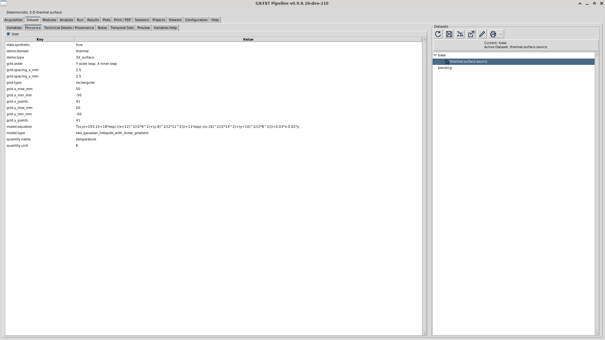
Open the original full-resolution capture (host link handling pending validation).

Step 3
Inspect the real Dataset Preview
Use the actual Dataset Preview controls, selecting X, Y and temperature for their scientific roles. The deposited source declares X/Y/Z selectors, Render, Dataset coordinates… and ⟳ 3D XYZ; confirm their actual presence and state before teaching literal labels. Observe the compatible real C++ Preview and its axes/units, source identity, bounds and meaningful first render.
Exercise the available Fit, zoom, pan, rotation, selection, visibility and resize controls where actually supported. Record absent/ineligible controls with their context; do not invent a universal Show/Hide control. X and Y share millimetres; Z is kelvin. Equal spatial XY scale is not an equal physical metric across millimetres and kelvin. Negative/zero spatial coordinates make an unrestricted ordinary log-X/log-Y view ineligible. Camera changes do not change source values.
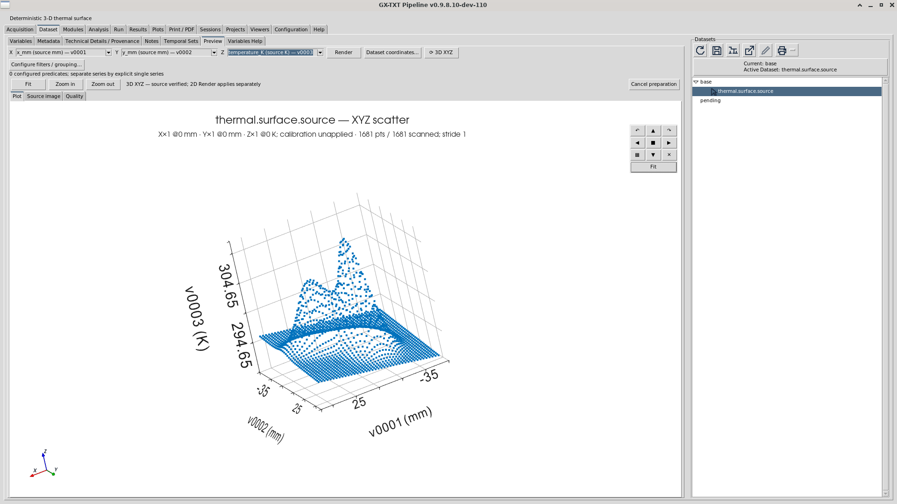
Open the original full-resolution capture (host link handling pending validation).

Step 4
Run the visualization module
Inspect the actual Analysis/Modules configuration rather than rerunning an unrelated Session. Verify the source and X/Y/Z bindings for 3D Surface Visualization Demo using actual stable Variable IDs. The recipe enables this module for Run; it also enables Scientific Dataset Plot but leaves that module out of the automatic Run selection. Preserve that distinction.
Use the normal Run/Jobs controls. Record the actual Job, completion or diagnostic, module version, settings, elapsed visible behavior and output association. Do not manufacture completion, execute a hidden analysis command or construct a report outside the GUI. A missing dependency or real failure goes through TUTORIAL1 to MAIN with exact evidence; pause only the affected path.
The module's source contract validates a finite complete rectangular grid and reports point count, grid size, temperature statistics and the sampled maximum location. Read its actual report and compare it with the known source/model reference. Do not paste expected values into an actual-results field. It does not interpolate missing cells or republish a replacement source Dataset.
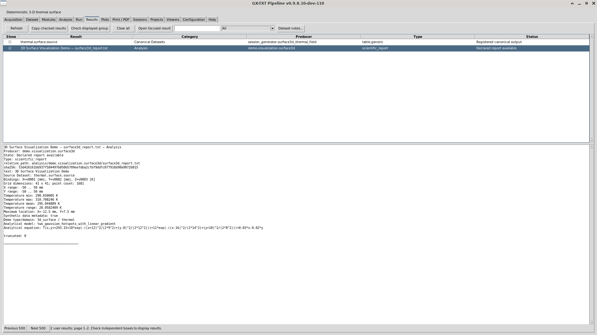
Open the original full-resolution capture (host link handling pending validation).

Step 5
Compare actual surface, mesh and contour outputs
The deposited descriptors declare three outputs:
demo.visualization.surface3d.surface— Thermal field - surface;demo.visualization.surface3d.mesh— Thermal field - mesh;demo.visualization.surface3d.contour3— Thermal field - 3D contour.
All three demo outputs were displayed after the normal Run. Graph Info confirmed the actual surface ID above, variant base, provider demo.visualization.surface3d and associated 01_surface.png. Exact mesh/contour Graph IDs listed above remain descriptor declarations until separately read back; record their actual associations when continuing. Keep static PNG inspection distinct from genuine interactive 3D consultation and Dataset Preview.
Select and compare the three actual graphs. A surface emphasizes the continuous appearance of the sampled field, a mesh exposes its sampled grid, and contours show temperature levels. None supplies new measurements between samples. Through actual graph controls, change a meaningful presentation setting, such as contour levels from the declared default 12 to 18, then restore or retain it deliberately. Record real rerender behavior and source identity. Do not claim cache reuse or unchanged computation from a screenshot alone.
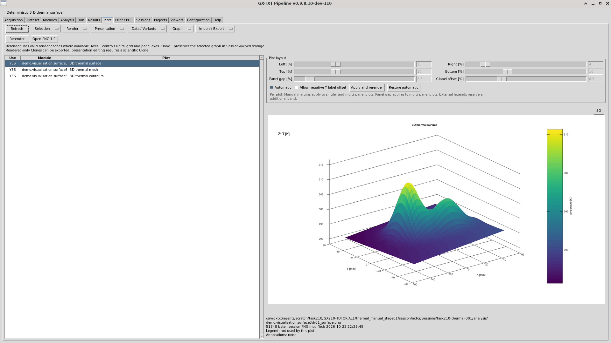
Open the original full-resolution capture (host link handling pending validation).

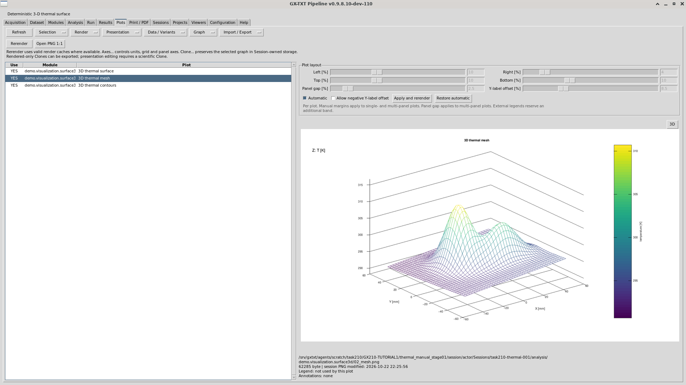
Open the original full-resolution capture (host link handling pending validation).

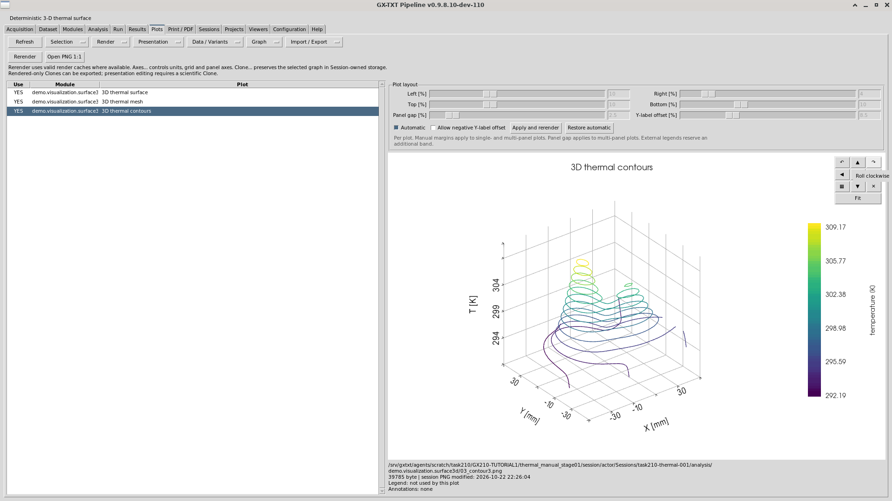
Open the original full-resolution capture (host link handling pending validation).

Step 6
Explore Plots completely, with honest applicability
Build the actual versioned Plots inventory from the current GUI, retaining earlier inventories as history. This tutorial requires its own complete matrix; the first short GUI packet does not finish it. Observe all actual menus, options, panels, series, variants, legends, axes, settings, navigation and supported save/export/Print flows. Record each visible control's actual outcome and reason.
Use the genuine Scientific Dataset Plot path on the same source where it provides an eligible representation. Its declared XYZ types include surface, mesh, contour3 and other conditional types. Do not connect the flattened grid as a fictitious time trace or transect merely to exercise a line control. A physical profile requires a supported actual constant-X/Y selection, retained identities and an ordered 41-point source subset. If that route is unavailable, record the gap rather than insert artificial data.
The manual Plot XYZ graph starts disabled with scatter3 as its declared type. Follow the recorded surface workflow:
- In Modules, select Scientific Dataset Plot for this Run and clear the demo from this Run selection. Module enablement and Run selection are separate states.
- In Analysis, retain
thermal.surface.sourceand the X/Y/Z bindingsv0001,v0002,v0003. Disable the XY and region offerings for this run, enable the XYZ graph, and choose surface for that graph. - Check the Run plan, then start the normal Run. Inspect its completion and select the returned
plot.dataset.xyzsurface in Plots. Keep diagnostics and graph identity with the result.
For future real spatial profiles, supported exact Y filters at 0 mm and 7.5 mm would select 41 actual source points each, ordered by X. These are prospective same-source slices, not independent acquisitions or already-produced Graphs.
The demo's graph descriptors declare no legend support; the actual Plot module may provide a separate compatible legend workflow. Distinguish provider and graph contexts instead of silently dropping visible controls. Each actual row starts NOT_TESTED; only genuine input and evidence establish an executed status. No row inherits another tutorial's outcome.
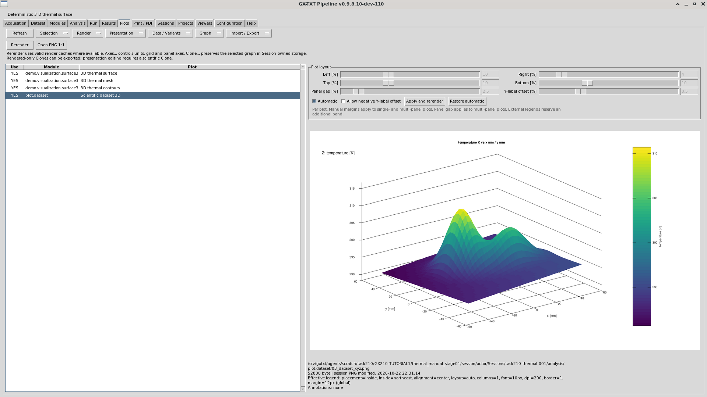
Open the original full-resolution capture (host link handling pending validation).

Recorded saved-Variant native route — scoped real GUI result
The existing manual base requires a persistent Variant for this native route in the tested build. Select the manual surface, then use Data / Variants → Variants… → New from base. Inspect the actual source and stable XYZ bindings, enabled state and surface type. Do not assume inheritance succeeded. Choose a meaningful title, then Save and render. Select the returned saved Variant in Plots and use its normal 3D action. In the recorded copy the returned ID was p0001; record your actual identity.
OBSERVED: p0001 inherited the expected bindings, rendered normally, exposed 3D and displayed genuine native thermal geometry. Mouse dragging changed the camera; Fit was exercised before and after rotation, then the normal close control returned to the raster. Fit is not a promise to reset camera orientation. This did not add measurements or rerun the demo. A new Variant is separate from its original base.
The native title displays literal auto; lower axis text clips and some rotated ticks overlap. The source map is X=v0001/x_mm [mm], Y=v0002/y_mm [mm], Z=v0003/temperature_K [K]. Read the figure captions and retain these visible limitations. Native tick padding is presentation, not a new source range or a result statistic. This saved-Variant view has no separately labelled colorbar; do not infer an exact temperature from its colors.
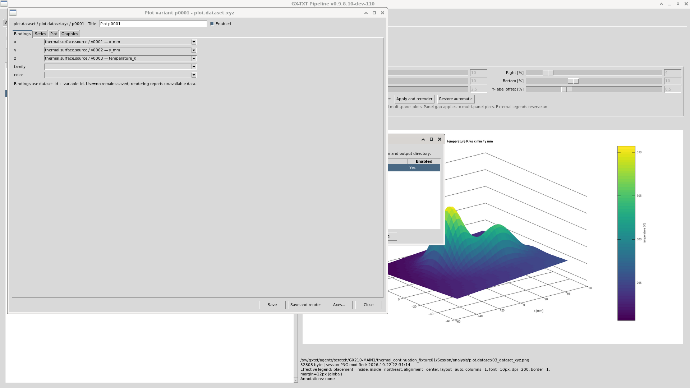
Open the original full-resolution capture (host link handling pending validation).

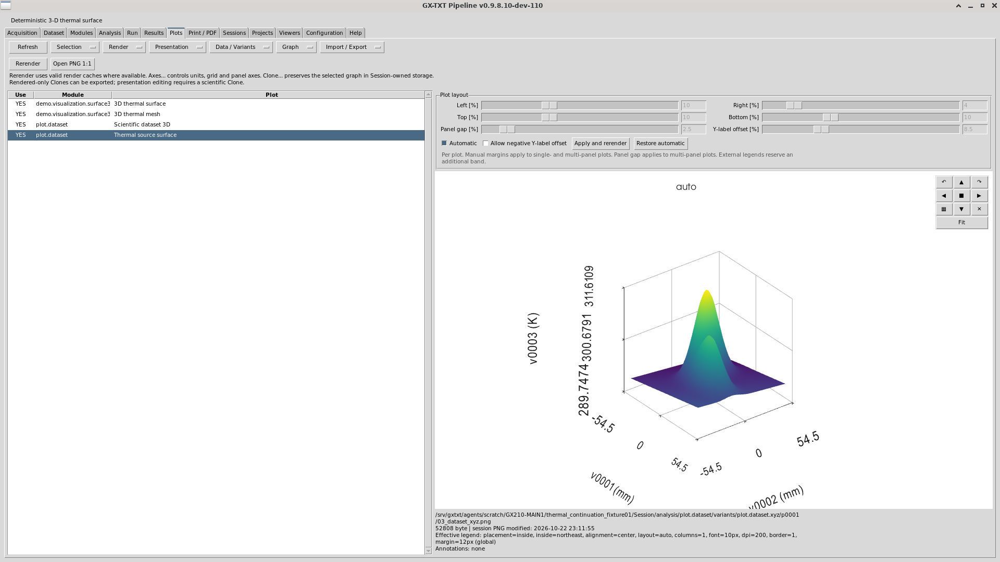
Open the original full-resolution capture (host link handling pending validation).

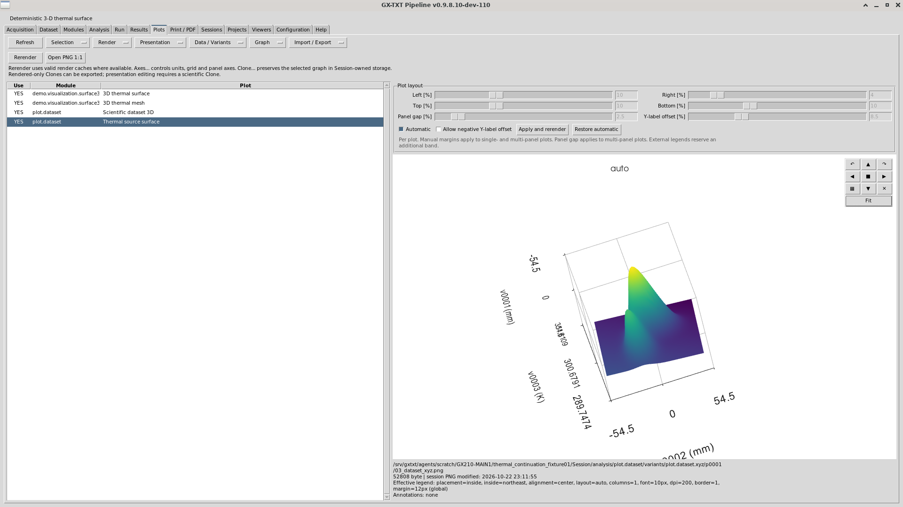
Open the original full-resolution capture (host link handling pending validation).

Partial observed menu matrix — 26 entries, incomplete inventory
Context: selected demo surface graph, staged dev110. Opening a menu does not test its operations. Disabled entries apply to this context only. Secondary dialogs and other graph contexts remain unfinished; no coverage percentage is claimed.
| Menu | Observed label | Operation status |
|---|---|---|
| Selection | All | NOT_TESTED |
| Selection | None | NOT_TESTED |
| Selection | Toggle | NOT_TESTED |
| Selection | Up | NOT_TESTED |
| Selection | Down | NOT_TESTED |
| Render | Rerender selected | NOT_TESTED |
| Render | Rerender module | NOT_TESTED |
| Presentation | Legend... | NOT_TESTED |
| Presentation | Place legend | NOT_TESTED |
| Presentation | Axes... | NOT_TESTED |
| Presentation | Title and labels... | NOT_TESTED |
| Presentation | Graphics... | NOT_TESTED |
| Presentation | Annotate... | NOT_TESTED |
| Data / Variants | Variants... | NOT_TESTED |
| Data / Variants | Select data... | PRESENT_BUT_DISABLED |
| Data / Variants | Select area | PRESENT_BUT_DISABLED |
| Data / Variants | Clear area | PRESENT_BUT_DISABLED |
| Graph | Clone... | NOT_TESTED |
| Graph | Edit clone... | NOT_TESTED |
| Graph | Delete... | NOT_TESTED |
| Graph | Graph info... | EXERCISED_AND_WORKING |
| Graph | Notes... | NOT_TESTED |
| Import / Export | Export... | NOT_TESTED |
| Import / Export | Export annotated... | NOT_TESTED |
| Import / Export | Export Graph ZIP... | NOT_TESTED |
| Import / Export | Import Graph ZIP... | NOT_TESTED |
Continuation observations — incomplete function/context record
These nine records describe the saved-Variant route and its actual defect. They are separate from the 26 initial menu entries, not a complete control denominator or a coverage percentage. Source bindings were inspected, not every selector option exercised.
| Function | Status | Tested scope |
|---|---|---|
| New from base | EXERCISED_AND_WORKING | Created p0001 through the existing manual XYZ Variant manager; this frame precedes its final rename and save. |
| Save and render | EXERCISED_AND_WORKING | Inspected the stable XYZ bindings and surface type; normal rendering completed. Graph-list preservation failed separately. |
| Thermal source surface | EXERCISED_AND_WORKING | Selected the saved p0001 and observed its available 3D action. |
| 3D | EXERCISED_AND_WORKING | Observed genuine saved-Variant geometry with mm/mm/K axes; graphic limitations remain. |
| Fit | EXERCISED_AND_WORKING | Invoked Fit before and after rotation. Camera reset and complete label margins were not established. |
| Mouse drag in native canvas | EXERCISED_AND_WORKING | Mouse dragging visibly changed the camera. No source change or performance equivalence is claimed. |
| × | EXERCISED_AND_WORKING | Closed the native view normally and returned to its raster. |
| Graph info... | EXERCISED_AND_WORKING | Read the actual module, graph, Variant and artifact identity before and after in-process Open. |
| Graph list after new Variant | FAILED_BUG | The original contour entry became hidden. MAIN diagnosed a false alias; the first difference is preserved and no fix was tested. |
Step 7
Save, reopen, interpret and package
Save through the normal interface and reopen the Session normally. Distinguish reopening within the current application from closing and launching the application afresh. Confirm actual retained Dataset/Variable/source identities, provenance, graphs/variants and supported presentation state. Observe a representative safe normal correction without fabricating failure or modifying production registries.
Measure actual visible Generate, Preview, Run/Jobs, Plots and navigation timings using the existing evidence method. Preserve stalls, failures and retakes. Report before/after improvement only with comparable real measurements. All included captures are unchanged originals from the allocated GUI. Input-to-capture intervals include tool and settling overhead; precise first-frame latency and comparative performance remain unmeasured.
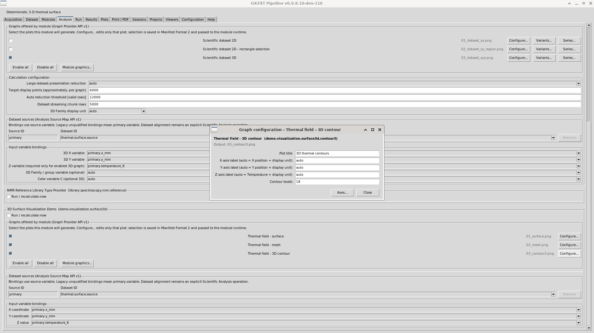
Open the original full-resolution capture (host link handling pending validation).

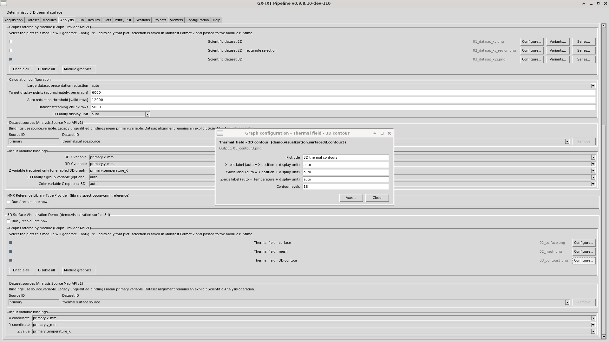
Open the original full-resolution capture (host link handling pending validation).

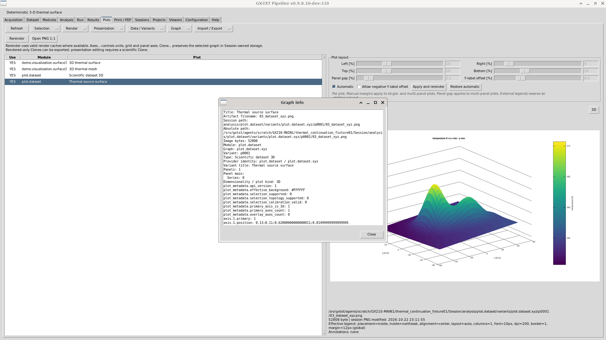
Open the original full-resolution capture (host link handling pending validation).

The final independent English HTML ZIP must contain the completed workflow, actual results/captures, full actual Plots matrix, Preview/timing evidence, provenance/limitations/recovery, local assets, manifest and checksum. Common Guides discovery and the corresponding generator action must use their actual accepted public route. No automatic generation on page load and no invented callback/URI is permitted. This draft is not that final deliverable.
Evidence still needed
The evidence record distinguishes actual staged dev110 observations from pending work. Personal reading marks never create evidence or update scientific results.
| Actual observation | Draft state |
|---|---|
| Assigned installed build/profile/display | Observed private staged dev110; no release activation acceptance |
| Registered selection and actual Session | Observed generator 1.0.1 and fresh task210-thermal-001; library version not read back |
| Canonical Dataset and Variables | Observed 1,681 × 3, v0001/v0002/v0003, mm/mm/K, synthetic metadata |
| Preview and module Run/Jobs | Native XYZ and real demo Run/report observed; durable Job ID not observed |
| Graphs and complete thermal Plots matrix | Original four graphs cold-opened; saved Variant/native route observed; contour-list alias defect open; full matrix NOT_COMPLETE |
| GUI latency and save/reopen | Limited action intervals; original source copy cold-opened; new Variant retained in-process; its cold restart NOT_TESTED |
| Common Guides and native generator action | NOT_TESTED — source-supported route only |
Draft provenance and review boundary
This HTML follows GX210-TUTORIAL1's THERMAL_WORKFLOW_DRAFT.md, authored from the deposited dev110 source. Formal dev111 authoring was authorized by MAIN's actual dev110 deposition notice 1b1ddae6-8c3d-4504-a9fe-c17c702dc88f. Two real staged dev110 packets supply the explicitly scoped observations and thirteen unchanged captures in this draft. It does not complete the independent Plots matrix, common-host check or final tutorial acceptance.
Package source provenance is recorded in provenance.json. Scientific/content/visual quality review remains with GX210-TUTORIAL1; MAIN controls integration, GUI slots and release. The project-authored content license is GPL-3.0-or-later, with the license text supplied in LICENSE.